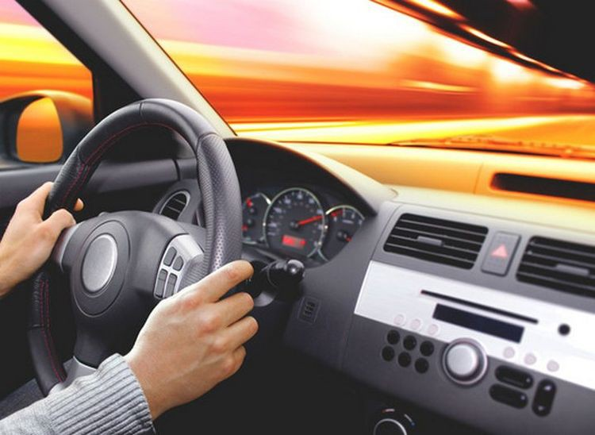

ТОП 10 лайфхаков для автомобиля
Автомобиль требует не только регулярного обслуживания, но и внимательного отношения к мелочам. Существуют простые лайфхаки для водителей, которые помогают сэкономить время, деньги и сделать поездки комфортнее. Вот 10 полезных советов, которые пригодятся каждому.
1. Используйте зубную пасту для очистки фар
Если фары помутнели, нанесите немного зубной пасты и протрите мягкой тканью. Фары станут заметно прозрачнее.
2. Стаканчик с рисом как держатель для телефона
Если под рукой нет держателя, можно взять пластиковый стакан и насыпать туда рис. Телефон будет стоять устойчиво и не скользить.
3. Лак для ногтей против трещин на стекле
Небольшую трещину на лобовом стекле можно временно остановить, нанеся прозрачный лак для ногтей. Это замедлит её распространение до визита в сервис.
4. Пищевая сода для устранения запахов
Посыпьте коврики содой, оставьте на несколько часов, а затем пропылесосьте. Неприятные запахи исчезнут.
5. Старый носок как защита от запотевания стёкол
Насыпьте в носок кошачий наполнитель или соду и оставьте в салоне. Он будет впитывать лишнюю влагу и предотвращать запотевание.
6. Используйте уксус для очистки стёкол
Смешайте уксус и воду в равных пропорциях и протрите стёкла. Это уберёт разводы и улучшит обзор.
7. Зеркало заднего вида без бликов
Если зеркала сильно бликуют ночью, нанесите на них антибликовое средство или даже обычное мыло, а затем отполируйте.
8. Теплая ложка для удаления вмятины
Нагрейте металлическую ложку и аккуратно приложите к небольшой вмятине. Пластик или металл слегка распрямится.
9. Храните деньги в старом футляре от жвачки
Чтобы всегда иметь «заначку» на парковку или мелкие расходы, положите купюру или монеты в пустой футляр. Это незаметно и удобно.
10. Липкая лента для уборки салона
Обычная скотч-лента поможет собрать волосы, пыль и крошки с сидений или ковриков, когда под рукой нет пылесоса.
Заключение
Эти лайфхаки для автомобиля сделают эксплуатацию проще и удобнее. Некоторые помогут сэкономить деньги, другие — улучшат комфорт. Попробуйте применить хотя бы пару советов, и вы заметите, что водить стало приятнее!